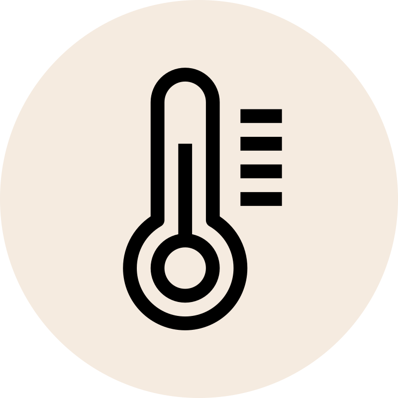

The Tools for Your Pefect Ritual
From professional grade espresso machines to the simple home friendly elegance of a manual pour over, discover equipments made for the dedicated enthusiasts.
Explore CollectionFrom professional grade espresso machines to the simple home friendly elegance of a manual pour over, discover equipments made for the dedicated enthusiasts.
Explore Collection


For most brewing methods, we recommend a ratio of 1:16 one gram of coffee for every sixteen grams of water.Use a Precision scale to ensure fine results.

Aim for water temperature between 90 to 95 degrees. Too hot and you;ll scorch the beans. too cold and you will miss the notes.
The duration of water to coffee contact dictates extraction level. Pour over should take 3-4 times, while frechpress requires a steady 4min steep.